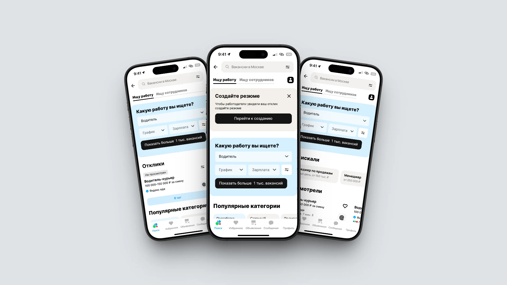

<!DOCTYPE html>
<html lang="ru">
<head>
<meta charset="utf-8">
<meta name="viewport" content="width=device-width, initial-scale=1">
<link rel="stylesheet" href="./theme.css">
<script src="./theme.js"></script>
<link rel="stylesheet" href="./site.css">
<title>Редизайн главного экрана вакансий — Сергей Ванаков</title>
<style>
  .cs { max-width: 800px; margin: 0 auto; padding: 96px 32px 120px; display: flex; flex-direction: column; gap: 72px; }
  .cs h1, .cs h2, .cs h3 { color: var(--text); }
  .cs h1 { font-size: 36px; font-weight: 600; line-height: 1.2; letter-spacing: -0.02em; margin: 0 0 12px; }
  .cs__sub { font-size: 16px; line-height: 1.5; color: var(--text-2); margin: 0; }
  .cs__meta { display: flex; flex-wrap: wrap; gap: 6px; margin: 20px 0 0; padding: 0; list-style: none; }
  .cs__meta li { padding: 4px 11px; border-radius: 999px; background: var(--hover-bg); color: var(--text-2); font-size: 14px; }
  .cs h2 { font-size: 36px; font-weight: 600; line-height: 1.15; letter-spacing: -0.02em; margin: 0 0 24px; }
  .cs h3 { font-size: 20px; font-weight: 600; letter-spacing: -0.01em; margin: 0 0 8px; }
  .cs p { font-size: 16px; line-height: 1.55; color: var(--text-2); margin: 0 0 14px; }
  .cs p:last-child { margin-bottom: 0; }
  .cs ul.list { margin: 0; padding: 0; list-style: none; display: flex; flex-direction: column; gap: 12px; }
  .cs ul.list li { position: relative; padding-left: 18px; font-size: 16px; line-height: 1.55; color: var(--text-2); }
  .cs ul.list li::before { content: ''; position: absolute; left: 2px; top: .62em; width: 6px; height: 6px; border-radius: 50%; background: var(--accent); }
  .cs__grid { display: grid; grid-template-columns: repeat(2, minmax(0, 1fr)); gap: 16px; }
  .cs__card { background: var(--surface); border: 1px solid var(--border); border-radius: 32px; padding: 20px 18px 18px; } /* отступы и скругление как у карточек кейсов */
  .cs__card p { font-size: 16px; }
  .cs__card .tag { display: inline-block; margin-bottom: 10px; padding: 3px 10px; border-radius: 999px; background: var(--hover-bg); color: var(--muted); font-size: 14px; }
  .cs__results { display: flex; flex-direction: column; }
  .cs__row { display: grid; grid-template-columns: 1.2fr 80px 2fr; gap: 20px; align-items: baseline; padding: 16px 0; border-top: 1px solid var(--border); }
  .cs__row:last-child { border-bottom: 1px solid var(--border); }
  .cs__row b { font-size: 16px; font-weight: 600; }
  .cs__score { font-size: 20px; font-weight: 600; font-variant-numeric: tabular-nums; }
  .cs__row span.d { font-size: 16px; line-height: 1.5; color: var(--text-2); }
  .cs__note { padding: 18px 22px; border-radius: 24px; background: var(--hover-bg); color: var(--text-2); font-size: 14px; line-height: 1.5; }
  .about-row { display: grid; grid-template-columns: 180px 1fr; gap: 24px; padding: 24px 0; border-top: 1px solid var(--border); align-items: start; }
  .about-row:first-child { border-top: none; padding-top: 0; }
  .about-label { font-size: 14px; font-weight: 500; color: var(--muted); }
  .about-text { font-size: 16px; font-weight: 400; line-height: 1.5; color: var(--text-2); margin: 0; }
  .about-list { display: flex; flex-direction: column; gap: 10px; }
  .about-list > div { display: flex; align-items: baseline; gap: 12px; }
  .about-list > div > span:first-child { color: var(--muted); }
  .cs .about-lead { font-size: 16px; font-weight: 400; line-height: 1.5; color: var(--text); margin: 0 0 32px; }
  .cs__cover { position: relative; margin-top: -24px; aspect-ratio: 16 / 9; overflow: hidden; border-radius: 32px; background: var(--placeholder); }
  .cs__cover img { position: absolute; inset: 0; width: 100%; height: 100%; object-fit: cover; }
  .cs__fig { display: flex; justify-content: center; margin-top: -40px; }
  @media (max-width: 720px) { .about-row { grid-template-columns: 1fr; gap: 10px; } .cs { padding: 72px 20px 80px; } .cs h1 { font-size: 26px; } .cs h2 { font-size: 26px; } .cs__grid { grid-template-columns: 1fr; } .cs__row { grid-template-columns: 1fr; gap: 4px; } }
</style>
<!-- Yandex.Metrika counter -->
<script type="text/javascript">
    (function(m,e,t,r,i,k,a){
        m[i]=m[i]||function(){(m[i].a=m[i].a||[]).push(arguments)};
        m[i].l=1*new Date();
        for (var j = 0; j < document.scripts.length; j++) {if (document.scripts[j].src === r) { return; }}
        k=e.createElement(t),a=e.getElementsByTagName(t)[0],k.async=1,k.src=r,a.parentNode.insertBefore(k,a)
    })(window, document,'script','https://mc.yandex.ru/metrika/tag.js?id=114133229', 'ym');

    ym(114133229, 'init', {ssr:true, webvisor:true, clickmap:true, ecommerce:"dataLayer", referrer: document.referrer, url: location.href, accurateTrackBounce:true, trackLinks:true});
</script>
<noscript><div></div></noscript>
<!-- /Yandex.Metrika counter -->
</head>
<body data-page="case" data-lang-reload>
<div id="site-header"></div>
<main class="cs" id="cs"></main>

<script type="module">
import { getLang } from './site.js';

const D = {
  ru: {
    title: 'Редизайн главного экрана вакансий платформы объявлений',
    sub: 'Разбор сервиса: аудитория, интервью, гипотезы, прототипы и проверка на пользователях. Мобильное приложение, iOS.',
    tags: ['Mobile', 'UX Research', 'Product Design', 'Prototyping'],
    sections: [
      { h: 'Контекст', g: 'Задача', p: [
        'Главная страница категории «Работа» в мобильном приложении платформы объявлений обслуживает два разных сценария: соискателей и тех, кто ищет сотрудников. Она помогает сориентироваться и сузить поиск. Пользователи попадают на этот экран с главного экрана платформы и с него начинают поиск вакансий.',
        'Сегодня экран выглядит одинаково и для человека, который только начал искать работу, и для того, кто ищет уже несколько месяцев.',
      ] },
      { h: 'Задача', g: 'Задача', p: [
        'Предложить редизайн первого экрана главной страницы категории «Работа» с точки зрения соискателя. Проектирование под iOS, экран 375×812. Придумать функции и сценарии, которые повысят MAU экрана, быстрее приведут пользователя к полезному действию и помогут вернуться в продукт.',
      ] },
      { h: 'Задачи бизнеса', g: 'Задача', p: [
        'MAU считает уникальных людей, зашедших на экран хотя бы раз в месяц. Поэтому он растёт не от частых заходов, а от двух вещей: приходят новые люди или старые заходят два месяца подряд. Это разделяет задачу на два требования: быстрее приводить к полезному результату и заставлять возвращаться.',
        'Платформа продаёт работодателям доступ к живым соискателям. Чем больше соискателей регулярно возвращается, тем больше можно получать за размещение объявлений.',
      ] },
      { h: 'Аудитория и сегменты', g: 'Исследование', p: [
        'Для сегментации выделил два критерия. Первый: новичок или опытный именно в поиске работы через это приложение. Он следует из контекста: экран одинаковый и для новичка, и для того, кто ищет уже несколько месяцев. Второй: тип потребности. Собрал его из тегов на экране: подработка, по сменам, временная работа, старше 45, студентам, от 14 лет с одной стороны; полный день и крупные компании с другой.',
        'На пересечении двух критериев получилось четыре сегмента.',
      ], cards: [
        { tag: 'Сегмент 1', h: 'Новичок, разовый заработок', p: 'Когда мне нужны деньги и я не знаю, с чего начать, хочу быстро увидеть подходящие варианты без разбора сложных фильтров, чтобы начать зарабатывать как можно скорее. Для него экран, скорее всего, первый опыт с таким приложением. Риск: уйдёт уже на входе, если экран покажется перегруженным.' },
        { tag: 'Сегмент 2', h: 'Опытный, разовый заработок', p: 'Когда мне нужна новая смена или заказ, хочу сразу попасть к знакомому набору вакансий без повторного объяснения системе, что мне нужно, чтобы не терять время между заработками. Его будет раздражать необходимость каждый раз заново заполнять одни и те же данные: ценность в скорости повторного цикла «поиск, отклик».' },
        { tag: 'Сегмент 3', h: 'Опытный, постоянная работа', p: 'Когда я уже откликнулся на вакансии, хочу понимать, что происходит с моими откликами, и видеть новые релевантные предложения, чтобы не терять момент и не проверять статус вручную через другие каналы. Единственная понятная причина открыть приложение снова: узнать, что с откликом, или увидеть новое по уже заданному запросу.' },
        { tag: 'Сегмент 4', h: 'Новичок, постоянная работа', p: 'Когда я ищу постоянную работу, хочу сразу понять, на что тут можно рассчитывать, чтобы не гадать, что из предложенного мне подходит. Впервые пробует искать постоянную работу через такое приложение и не понимает, как всё устроено: категории, фильтры, что значит каждый блок.' },
      ] },
      { h: 'Анализ конкурентов', g: 'Исследование', p: [
        'Посмотрел, как устроены главные экраны hh.ru, SuperJob и Rabota.ru: как они показывают отклики, резюме и прошлые запросы и как встречают новичка и опытного соискателя.',
      ] },
      { h: 'Интервью', g: 'Исследование', p: [
        'Провёл интервью с тремя респондентами, которые недавно искали работу или подработку. Выделил инсайты:',
      ], list: [
        'Неопытным страшно искать подработку через приложение: это незнакомая территория. Проще попросить знакомых устроить или сразу идти в понятные варианты вроде официанта, курьера или сотрудника ПВЗ.',
        'Те, кто давно ищет постоянную работу, открывают приложение по поводу: узнали про интересную вакансию в своей сфере или что в известной компании открылось место.',
        'Активный соискатель использует не одно приложение, а несколько источников сразу: агрегаторы, каналы в соцсетях, сайты компаний.',
        'Кто в активном поиске, часто ведёт отдельную таблицу в Excel или Google Sheets, чтобы не терять вакансии и их статусы.',
        'Рекрутер может ответить и в чат приложения, и по указанным контактам, поэтому соискателю приходится проверять оба места.',
        'При долгом безрезультатном поиске падает мотивация, руки опускаются.',
      ] },
      { h: 'Что не работает сейчас', g: 'Исследование', list: [
        'Отклики, «Создать резюме» и личный кабинет висят одной строкой мелким текстом, все элементы одинаковы и незаметны при первом просмотре. Слишком много разных по значимости элементов одного размера, нарушена иерархия.',
        'Чтобы увидеть историю своего поиска, нужно пролистать половину страницы. «Вы искали» и поле поиска разделены другими блоками, поэтому человек не видит прошлый запрос и набирает его заново.',
        'Отдельной страницы под подработку нет, тег «подработка» спрятан внутри общих фильтров. После отклика карточка вакансии пропадает из ленты, статус живёт в отдельной вкладке. О новом с прошлого визита ничего нет.',
      ] },
      { h: 'Гипотезы и решения', g: 'Решение', cards: [
        { tag: 'Гипотеза 1', h: 'Разбить верхнюю строку', p: 'Отклики вынести сводкой в основной ленте: сколько активных откликов и есть ли новый статус, с переходом на отдельную страницу. «Создать резюме» сделать крупной плашкой в начале экрана: она показывается, только пока резюме ещё нет, и сразу подсказывает нужное действие тем, кто на сервисе впервые. Личный кабинет оставить компактной кнопкой в одну строку с тумблером «ищу работу / ищу сотрудников», закреплённой сверху.' },
        { tag: 'Гипотеза 2', h: 'Последний запрос на видном месте', p: 'Вынести «Вы искали» в верх экрана, чтобы человек видел прошлый запрос до того, как начнёт вводить новый. Тому, кто ищет регулярно, важно увидеть его до того, как он начнёт печатать, а не после.' },
        { tag: 'Гипотеза 3', h: 'Избранное для вакансий и компаний', p: 'Сохранять в избранное не только вакансии, но и компании целиком, чтобы смотреть только сохранённое. Оформить карточкой в «Популярных категориях», которая ведёт на отдельный экран с избранным. Не нужно держать в голове или в отдельной таблице то, на что пока не откликнулся, но хочешь вернуться.' },
        { tag: 'Дополнительно', h: 'Теги сверху', p: 'Теги прямо на главной: вакансии для меня, подработки, свежие вакансии. Переключение между режимами быстрое и на виду.' },
      ] },
      { h: 'Проверка', g: 'Итоги', p: [
        'Проверил прототип на трёх респондентах: насколько понятны новые элементы главного экрана, статус по откликам, избранное, плашка резюме и перенос «Вы искали» наверх. Что отслеживал: успешность прохождения, заметил элемент сам или нет, понял ли назначение, точки замешательства.',
        'Сценарии: откликнуться на вакансию и посмотреть, что происходит с откликами; сохранить вакансию и найти её среди избранного; посмотреть на главный экран и сказать, что нужно сделать в первую очередь; найти способ повторить прошлый поисковый запрос.',
      ], results: [
        ['Отклики', '3 из 3', 'Ошибок нет. Нашли кнопку отклика сами, заметили появившийся раздел, поняли связь с собственным действием. Не нужно заходить в отдельную вкладку, статус виден на главном экране.'],
        ['Избранное', '3 из 3', 'Ошибок нет. Нашли раздел среди категорий сами, не перепутали с «Вы смотрели».'],
        ['«Вы искали» наверху', '3 из 3', 'Ошибок нет. Расположение понятно сразу, запрос не нужно вводить заново.'],
        ['Плашка резюме', '2 из 3', 'Один респондент не заметил плашку сразу. Нужен более сильный акцент.'],
      ] },
      { h: 'Выводы', g: 'Итоги', p: [
        'Три решения из четырёх подтвердили понятность без доработок, четвёртое (плашка резюме) требует доработки.',
        'У двух из выделенных сегментов уже есть причина вернуться: опытный с разовым заработком ждёт смену, опытный с постоянной работой ждёт ответ. У новичков причины возврата нет, для них важнее качество первого захода. Предполагаю, что ставку в первую очередь стоит делать на сегменты с опытом, а не на новичков.',
      ], note: 'Это проверка прототипа на малой выборке (три респондента), а не метрики реального продукта. Вывод про сегменты это гипотеза, она не измерена.' },
    ],
  },
  en: {
    title: 'Redesign of a Classifieds Platform’s Jobs Home Screen',
    sub: 'A study of the service: audience, interviews, hypotheses, prototypes and user checks. Mobile app, iOS.',
    tags: ['Mobile', 'UX Research', 'Product Design', 'Prototyping'],
    sections: [
      { h: 'Context', g: 'Brief', p: [
        'The home page of the “Jobs” category in the classifieds platform’s mobile app serves two different scenarios: job seekers and people hiring. It helps users get oriented and narrow the search. Users reach it from the platform’s main screen and start their vacancy search there.',
        'Today the screen looks the same for someone who has just started looking for a job and for someone who has been searching for months.',
      ] },
      { h: 'Task', g: 'Brief', p: [
        'Propose a redesign of the first screen of the “Jobs” home page from the job seeker’s point of view. iOS, 375×812 screen. Come up with features and scenarios that raise the screen’s MAU, lead users to a useful action faster and help them come back.',
      ] },
      { h: 'Business goals', g: 'Brief', p: [
        'MAU counts unique people who open the screen at least once a month. So it grows not from frequent visits but from two things: new people arrive, or existing users come back two months in a row. This splits the task into two requirements: lead to a useful result faster and give a reason to return.',
        'The platform sells employers access to live job seekers. The more job seekers return regularly, the more it can earn from listings.',
      ] },
      { h: 'Audience and segments', g: 'Research', p: [
        'I used two segmentation criteria. First: newcomer or experienced in searching for jobs through this app. It follows from the context: the screen is the same for a newcomer and for someone who has been searching for months. Second: type of need. I collected it from the tags on the screen: side jobs, shifts, temporary work, over 45, students, from 14 on one side; full day and large companies on the other.',
        'The intersection of the two criteria gave four segments.',
      ], cards: [
        { tag: 'Segment 1', h: 'Newcomer, one-off earnings', p: 'When I need money and do not know where to start, I want to quickly see suitable options without sorting through complex filters, so I can start earning as soon as possible. This is probably their first experience with such an app. Risk: they leave right at the entrance if the screen feels overloaded.' },
        { tag: 'Segment 2', h: 'Experienced, one-off earnings', p: 'When I need a new shift or order, I want to go straight to a familiar set of vacancies without explaining again what I need, so I do not lose time between jobs. They will be annoyed by having to refill the same data every time: the value is the speed of the repeat “search, apply” cycle.' },
        { tag: 'Segment 3', h: 'Experienced, permanent job', p: 'When I have already applied, I want to understand what is happening with my applications and see new relevant offers, so I do not miss the moment or check status manually through other channels. The only clear reason to open the app again: find out what happened to an application or see something new for an existing query.' },
        { tag: 'Segment 4', h: 'Newcomer, permanent job', p: 'When I look for a permanent job, I want to understand right away what I can count on here, so I do not have to guess what suits me. They try to find a permanent job through such an app for the first time and do not understand how everything works: categories, filters, what each block means.' },
      ] },
      { h: 'Competitor analysis', g: 'Research', p: [
        'I looked at how the home screens of hh.ru, SuperJob and Rabota.ru work: how they show applications, resumes and previous queries, and how they greet a newcomer and an experienced job seeker.',
      ] },
      { h: 'Interviews', g: 'Research', p: [
        'I interviewed three respondents who had recently looked for a job or a side job. Insights:',
      ], list: [
        'Newcomers are afraid to look for a side job through an app: it is unfamiliar territory. It is easier to ask friends or go straight to clear options like waiter, courier or pickup point staff.',
        'Those who have long been looking for a permanent job open the app for a reason: they heard about an interesting vacancy in their field or that a well-known company opened a position.',
        'An active job seeker uses several sources at once, not one app: aggregators, social media channels, company sites.',
        'People in an active search often keep a separate Excel or Google Sheets table so they do not lose vacancies and their statuses.',
        'A recruiter may reply both in the app chat and via the listed contacts, so the job seeker has to check both places.',
        'During a long unsuccessful search motivation drops and people lose heart.',
      ] },
      { h: 'What does not work today', g: 'Research', list: [
        'Applications, “Create resume” and the personal account sit in one line of small text. All elements are equal and unnoticeable at first glance. Too many elements of different importance are the same size, so the hierarchy is broken.',
        'To see the search history you have to scroll half a page. “You searched” and the search field are separated by other blocks, so a person does not see the previous query and types it again.',
        'There is no separate page for side jobs; the “side job” tag is hidden inside general filters. After applying, the vacancy card disappears from the feed and the status lives in a separate tab. Nothing tells you what is new since the last visit.',
      ] },
      { h: 'Hypotheses and solutions', g: 'Solution', cards: [
        { tag: 'Hypothesis 1', h: 'Break up the top row', p: 'Show applications as a summary in the main feed: how many are active and whether there is a new status, linking to a separate page. Make “Create resume” a large banner at the start of the screen: it appears only while there is no resume and immediately points first-time users to the right action. Keep the personal account as a compact one-line button with an “I’m looking for a job / I’m hiring” toggle pinned at the top.' },
        { tag: 'Hypothesis 2', h: 'Last query in a visible place', p: 'Move “You searched” to the top so a person sees the previous query before typing a new one. For someone who searches regularly it matters to see it before they start typing, not after.' },
        { tag: 'Hypothesis 3', h: 'Favorites for vacancies and companies', p: 'Save not only vacancies but whole companies, to view only what is saved. Present it as a card in “Popular categories” leading to a separate favorites screen. No need to keep in your head or in a spreadsheet what you have not applied to yet but want to come back to.' },
        { tag: 'Additional', h: 'Tags at the top', p: 'Tags right on the home screen: vacancies for me, side jobs, fresh vacancies. Switching between modes is fast and visible.' },
      ] },
      { h: 'Check', g: 'Outcome', p: [
        'I checked the prototype with three respondents: how clear the new elements of the home screen are, the application status, favorites, the resume banner and the “You searched” block moved to the top. What I tracked: task success, whether they noticed the element on their own, whether they understood its purpose, points of confusion.',
        'Scenarios: apply to a vacancy and see what happens with applications; save a vacancy and find it among favorites; look at the home screen and say what to do first; find a way to repeat the previous search query.',
      ], results: [
        ['Applications', '3 of 3', 'No errors. They found the apply button themselves, noticed the new section and understood its link with their own action. No need to open a separate tab, the status is visible on the home screen.'],
        ['Favorites', '3 of 3', 'No errors. They found the section among categories on their own and did not confuse it with “Viewed”.'],
        ['“You searched” at the top', '3 of 3', 'No errors. The position was clear at once, no need to type the query again.'],
        ['Resume banner', '2 of 3', 'One respondent did not notice the banner right away. It needs a stronger accent.'],
      ] },
      { h: 'Conclusions', g: 'Outcome', p: [
        'Three of four solutions were clear without rework; the fourth (the resume banner) needs rework.',
        'Two of the segments already have a reason to return: an experienced one-off earner waits for a shift, an experienced permanent-job seeker waits for an answer. Newcomers have no reason to return; the quality of the first visit matters more for them. I assume the first bet should be on segments with experience rather than on newcomers.',
      ], note: 'This is a prototype check with a small sample (three respondents), not metrics of a real product. The conclusion about segments is a hypothesis and has not been measured.' },
    ],
  },
};

// Итоговый раздел в конце: короткий вывод и тот же список результатов проверки, чтобы их не нужно было искать выше.
for (const l of ['ru', 'en']) {
  const check = D[l].sections.find((x) => x.results);
  D[l].sections.push(l === 'ru'
    ? { h: 'Результаты', g: 'Итоги', p: ['Три решения из четырёх подтвердили понятность без доработок, четвёртое (плашка резюме) требует доработки. Проверка прототипа на трёх респондентах, это не метрики реального продукта.'], results: check.results }
    : { h: 'Results', g: 'Outcome', p: ['Three of four solutions were clear without rework; the fourth (the resume banner) needs rework. A prototype check with three respondents, not metrics of a real product.'], results: check.results });
}

const ABOUT = {
  ru: {
    h: 'О проекте', g: 'Обзор',
    lead: 'Редизайн главного экрана вакансий мобильного приложения платформы объявлений: как сделать, чтобы экран быстрее приводил к полезному действию и давал причину вернуться.',
    labels: ['Моя роль', 'Проблемы', 'Цели продукта', 'Что я сделал', 'Результаты'],
    role: 'Личный проект. Исследование, дизайн, прототип: сам выделил сегменты, провёл интервью, сформулировал гипотезы, собрал прототипы и проверил их на пользователях.',
    problems: ['Экран выглядит одинаково для новичка и для того, кто ищет работу месяцами.', 'Отклики, «Создать резюме» и личный кабинет теряются в одной строке мелким текстом.', 'История поиска спрятана: чтобы увидеть прошлый запрос, нужно пролистать половину страницы.', 'О новом с прошлого визита ничего не видно, причины вернуться нет.'],
    goals: ['Быстрее приводить пользователя к полезному действию.', 'Дать причину возвращаться, чтобы вырос MAU экрана.'],
    actions: ['Выделил четыре сегмента по опыту поиска и типу потребности.', 'Провёл три интервью и посмотрел главные экраны hh.ru, SuperJob и Rabota.ru.', 'Сформулировал три гипотезы и собрал прототипы.', 'Проверил прототип на трёх респондентах.'],
    results: ['Три решения из четырёх понятны без доработок, плашка резюме требует доработки.', 'Это проверка прототипа на трёх респондентах, не метрики реального продукта.'],
  },
  en: {
    h: 'About the project', g: 'Overview',
    lead: 'A redesign of the jobs home screen in a classifieds platform’s mobile app: how to make the screen lead to a useful action faster and give people a reason to come back.',
    labels: ['My role', 'Problems', 'Product goals', 'What I did', 'Results'],
    role: 'Personal project. Research, design, prototype: I defined the segments, ran the interviews, formulated the hypotheses, built the prototypes and checked them with users.',
    problems: ['The screen looks the same for a newcomer and for someone searching for months.', 'Applications, “Create resume” and the personal account get lost in one line of small text.', 'Search history is hidden: to see the previous query you have to scroll half a page.', 'Nothing shows what is new since the last visit, so there is no reason to come back.'],
    goals: ['Lead the user to a useful action faster.', 'Give a reason to come back, so the screen’s MAU grows.'],
    actions: ['Defined four segments by search experience and type of need.', 'Ran three interviews and looked at the home screens of hh.ru, SuperJob and Rabota.ru.', 'Formulated three hypotheses and built prototypes.', 'Checked the prototype with three respondents.'],
    results: ['Three of four solutions were clear without rework; the resume banner needs rework.', 'This is a prototype check with three respondents, not metrics of a real product.'],
  },
};

const esc = (s) => String(s).replace(/[&<>"]/g, (c) => ({ '&': '&amp;', '<': '&lt;', '>': '&gt;', '"': '&quot;' }[c]));
const lang = getLang() === 'en' ? 'en' : 'ru';
const FIGMA = 'https://www.figma.com/design/Qe35B2U7Rc3qYIEQT4pJ0o/%D0%92%D0%B0%D0%BD%D0%B0%D0%BA%D0%BE%D0%B2-%D0%A1.-%7C-%D0%90%D0%B2%D0%B8%D1%82%D0%BE-%D0%B1%D1%83%D1%82%D0%BA%D0%B5%D0%BC%D0%BF-%D1%82%D0%B5%D1%81%D1%82%D0%BE%D0%B2%D0%BE%D0%B5-%D0%B7%D0%B0%D0%B4%D0%B0%D0%BD%D0%B8%D0%B5?node-id=0-1&t=q7w1fHVnXdq6ia6w-1';
const L = lang === 'en' ? { figma: 'Open file in Figma' } : { figma: 'Открыть файл в Figma' };
const d = D[lang];
document.title = d.title + ' — ' + (lang === 'en' ? 'Sergei Vanakov' : 'Сергей Ванаков');
document.documentElement.lang = lang;

const secHtml = (s, i) => `
  <section id="sec-${i + 1}" data-group="${esc(s.g || '')}">
    <h2>${esc(s.h)}</h2>
    ${(s.p || []).map((p) => `<p>${esc(p)}</p>`).join('')}
    ${s.cards ? `<div class="cs__grid" style="margin-top:${s.p ? 20 : 0}px">${s.cards.map((c) => `<div class="cs__card"><span class="tag">${esc(c.tag)}</span><h3>${esc(c.h)}</h3><p>${esc(c.p)}</p></div>`).join('')}</div>` : ''}
    ${s.list ? `<ul class="list" style="margin-top:${s.p ? 20 : 0}px">${s.list.map((i) => `<li>${esc(i)}</li>`).join('')}</ul>` : ''}
    ${s.results ? `<div class="cs__results" style="margin-top:20px">${s.results.map((r) => `<div class="cs__row"><b>${esc(r[0])}</b><span class="cs__score">${esc(r[1])}</span><span class="d">${esc(r[2])}</span></div>`).join('')}</div>` : ''}
    ${s.note ? `<p class="cs__note" style="margin-top:20px">${esc(s.note)}</p>` : ''}
  </section>`;

const about = ABOUT[lang];
const list = (arr) => `<div class="about-list">${arr.map((x) => `<div><span>•</span><span class="about-text">${esc(x)}</span></div>`).join('')}</div>`;
const aboutHtml = `
  <section id="sec-about">
    <h2>${esc(about.h)}</h2>
    <p class="about-lead">${esc(about.lead)}</p>
    <div>
      <div class="about-row"><span class="about-label">${esc(about.labels[0])}</span><span class="about-text">${esc(about.role)}</span></div>
      <div class="about-row"><span class="about-label">${esc(about.labels[1])}</span>${list(about.problems)}</div>
      <div class="about-row"><span class="about-label">${esc(about.labels[2])}</span>${list(about.goals)}</div>
      <div class="about-row"><span class="about-label">${esc(about.labels[3])}</span>${list(about.actions)}</div>
      <div class="about-row"><span class="about-label">${esc(about.labels[4])}</span>${list(about.results)}</div>
    </div>
  </section>`;

document.getElementById('cs').innerHTML = `
  <header>
    <h1>${esc(d.title)}</h1>
  </header>
  <div class="cs__cover"></div>
  <div class="cs__fig"><a class="btn btn--cv" href="${FIGMA}" target="_blank" rel="noopener"><span>${esc(L.figma)}</span><svg width="20" height="20" viewBox="0 0 24 24" fill="none" stroke="currentColor" stroke-width="2.2" stroke-linecap="round" stroke-linejoin="round" aria-hidden="true"><path d="M7 17L17 7M8.5 7H17v8.5"/></svg></a></div>
  ${aboutHtml}
  ${d.sections.map((s, i) => secHtml(s, i)).join('')}`;
</script>
<script type="module" src="./site.js"></script>
</body>
</html>
